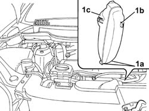

1048A56 UPPER RESONATOR DEVICE - R R
- Path
- Procedures > 10 ENGINE > 1048 ENGINE AIR SUPPLY CIRCUIT > 1048A VACUUM AIR CIRCUIT > 1048A56 UPPER RESONATOR DEVICE - R R
- Kind
- repair procedure (removal / refitting; the operation number is the code)
- Applies to
- engines: 2.0 16v; all production periods
- Interactive page
- https://sloeber94.github.io/elrnDB-fUlss/en/#/179007006
Applies to: engines: 2.0 16v; all production periods
 Removing
Removing
 Refitting
RefittingSee in Op. 1048A10
Applies to: engines: 2.0 16v; all production periods
1. Lift up the resonator releasing it from the lower connectors (1a) and from the connector (1b), then remove the actual resonator (1c).

Applies to: engines: 2.0 16v; all production periods
Refitting
Removing- Fit the resonator removed previously and renew the fastenings.
See in Op. 1048A10